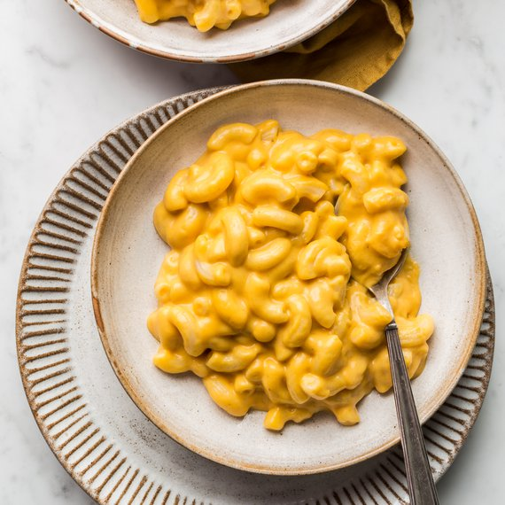

Mac N' Cheese

The taste of childhood...
Mac N' Cheese has always been a staple while I grew up, which then became a comfort dish as I got older, and since I make it frequently, It's important to keep it simple. In the following recipe, we will combine common household Ingredients in the most delicious way known to mankind.
Ingredients:
- Macaroni
- Sharp cheddar cheese
- Butter
- Milk
- Chopped garlic
Steps:
- Cook 60g of dry Macaroni in boiled water for 7 minutes, then drain the water accordingly.
- Add a stick of butter to a heated pan, then add chopped garlic.
- Add 1 cup of milk and whisk gently before adding the cooked Macaroni.
- Add 50g of shredded cheddar and whisk until the desired creaminess is achieved.
- Add salt, pepper, and parsley(optional) to taste.